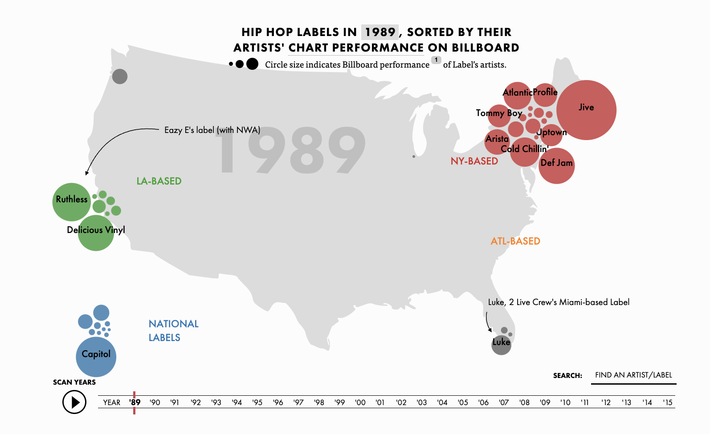

Let's look at just 1989, the launch of Billboard's "Hot Rap Singles" chart:
In 1989, regional independant labels dominated with superstar signings: Young MC and Pharcycle are signed to Delicious Vinyl. Biz Markie (Just a Friend), Big Daddy Kane (Smooth Operator), and Marley Marl are all on Cold Chillin'. Ruthless, Eazy E's label has N.W.A and The D.O.C on its roster. Jive is crushing it with a roster that includes Boogie Down Productions, DJ Jazzy Jeff and the Fresh Prince, and Too $hort. And Tommy Boy presciently released both De La Soul and Queen LAtifah's first albums.'
NEXT BACK